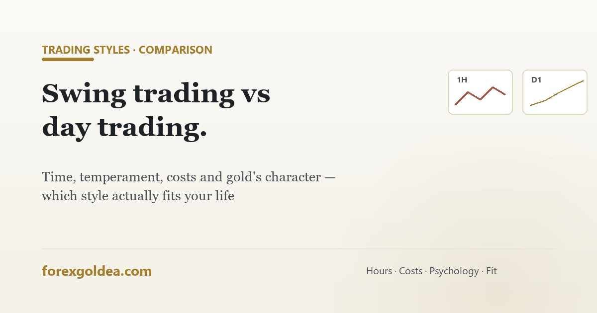

Swing trading vs day trading: which actually fits your life?

Every new trader picks a style by accident — usually whichever YouTube video they saw first — and then wonders why trading feels like a second job they're failing at. The style question deserves a real answer, because the right one is decided by your life, not by the market.
The two styles, honestly compared
| Day trading | Swing trading | |
|---|---|---|
| Holding period | Minutes to hours — flat by day's end | Days to weeks |
| Screen time | Hours daily, during specific sessions | Minutes daily — evening check-ins work |
| Trades/month | Dozens to hundreds | A handful |
| Profit target/trade | Small ($1–5 on gold) | Large ($10–40+) |
| Cost sensitivity | Severe — spread can eat a third of each target | Mild — targets dwarf the toll; swap applies overnight |
| Psychological load | Rapid decisions, session intensity, revenge-trade risk | Patience through pullbacks, overnight-gap nerves |
| Capital feel | Compounds in small frequent steps | Lumpy — quiet stretches, then runs |
What gold's character prefers
XAUUSD trends hard on macro shifts and chops between them — which is why trend and swing approaches forgive gold's costs and day-scalping styles fight them. Day trading gold is absolutely done — but profitably mostly by experienced traders on raw spreads inside the London–NY window. Swing trading rides the moves that make gold famous, with the trade-off of holding through news nights (why that matters) and paying swap — or using swap-free accounts where appropriate.
The four questions that actually decide it
- How many uninterrupted hours can you give the London–NY window (6:30–10:30 PM IST)? Fewer than two → day trading is fighting your calendar.
- Which failure sounds more like you — overtrading from boredom (then avoid day trading's temptations) or panic-closing overnight positions (then swing needs smaller sizing)?
- What account are you running? Frequent trading multiplies costs on small accounts — the math in honest returns hits day traders hardest.
- Can you journal 20+ trades before judging? Day trading reaches statistical sample sizes faster; swing verdicts take months of patience.
The psychology split nobody mentions
Both styles fail through the same biases wearing different clothes: the day trader's demon is revenge trading (another entry is always seconds away), the swing trader's is loss aversion (days of watching a loser "come back"). Pick the style whose demon you're better armed against — and cap both with the same rules: 1–2% risk, stops always, daily/weekly loss limits.
The third option: let the style run itself
Automation quietly dissolves much of this choice. A rule-based EA holds positions by its logic — intraday or multi-day — without you supplying the screen hours or the discipline in the moment. ForexGoldEA, for instance, trades gold's trend character with fixed stops during liquid hours: structurally closer to the swing/trend end, delivered without the evening chart-watching. The style decision then shrinks to something calmer: whose rules run — yours live at the screen, or tested code on a VPS? Follow the demo-first path in either case.
Reader questions
What is the difference between swing trading and day trading?
Day = same-day, many small trades, heavy screen time. Swing = days-to-weeks, few larger trades, overnight exposure.
Which is more profitable, swing or day trading?
Neither inherently — discipline and cost control decide, not the label.
Is swing trading better for beginners?
Usually — fewer pressured decisions and day-job compatible; the test is patience, not speed.
Is gold better for swing trading or day trading?
Swing/trend fits gold's character best; day trading needs raw spreads + the LDN-NY window.
How much time does each style need?
Day: dedicated session hours. Swing: minutes daily. Your calendar often decides.
Can a trading robot do swing or day trading for me?
Yes — an EA supplies the screen time and discipline; you choose the tested logic.
Where this leaves you
Swing versus day trading was never really a market question — it's a calendar, temperament and cost question wearing a trading costume. Count your genuinely free hours, name the demon you're better armed against, do the cost math for your account size, and the style picks itself. And if the honest answer is "neither fits my life right now," that's what tested automation is for — the rules trade the style, and you keep the life.
Affiliate disclosure: we earn a commission when you open and fund an account through our partner links, at no extra cost to you.